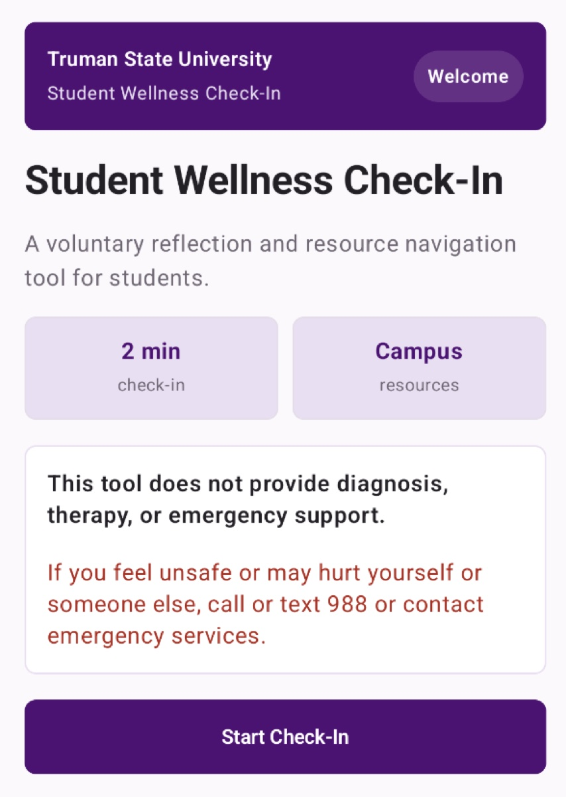

01 / RESPONSIBLE AIIN DEVELOPMENT

Student Wellness Check-In
An AI-powered wellness application designed around accessibility, safety, user control, and reliable resource matching.
- Kotlin
- Jetpack Compose
- FastAPI
- Qwen
- Gemini
My contribution: Defined the product workflow and coordinated Android, API, model-routing, structured-output, evaluation, and fallback workstreams.